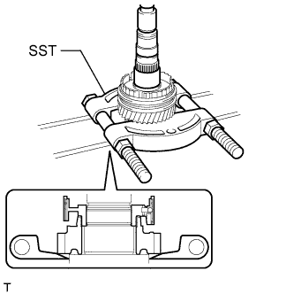

ЗАДАЮЩАЯ ШЕСТЕРНЯ > РАЗБОРКА |
| 1. INSPECT REVERSE GEAR THRUST CLEARANCE |
Using a feeler gauge, measure the reverse gear thrust clearance.
| 2. INSPECT 1ST GEAR THRUST CLEARANCE |
Using a dial indicator, measure the 1st gear thrust clearance.
| 3. INSPECT 2ND GEAR THRUST CLEARANCE |
Using a dial indicator, measure the 2nd gear thrust clearance.
| 4. INSPECT REVERSE GEAR RADIAL CLEARANCE |
Using a dial indicator, measure the reverse gear radial clearance.
| 5. INSPECT 1ST GEAR RADIAL CLEARANCE |
Using a dial indicator, measure the 1st gear radial clearance.
| 6. INSPECT 2ND GEAR RADIAL CLEARANCE |
Using a dial indicator, measure the 2nd gear radial clearance.
| 7. REMOVE NO. 1 COUNTER GEAR FRONT BEARING SNAP RING |
Using a snap ring expander, remove the snap ring from the counter gear.
| 8. REMOVE COUNTER GEAR FRONT BEARING |
Using SST and a press, remove the counter gear front bearing or roller from the counter gear.
| 9. REMOVE REVERSE GEAR BEARING RACE INNER |
Remove the reverse gear bearing race inner from the counter gear.
| 10. REMOVE COUNTER SHAFT REVERSE GEAR |
Remove the counter shaft reverse gear from the counter gear.
Remove the hub sleeve, 2 shifting keys and key spring from the counter shaft reverse gear.
| 11. REMOVE REVERSE GEAR NEEDLE ROLLER BEARING |
Remove the reverse gear needle roller bearing from the counter gear.
| 12. REMOVE NO. 4 SYNCHRONIZER RING |
Remove the No. 4 synchronizer ring from the counter gear.
| 13. REMOVE BALL |
Remove the ball from the counter gear.
| 14. REMOVE COUNTER SHAFT 1ST SPEED GEAR |
Using SST and a press, remove the counter shaft gear 1st speed together with the reverse gear spline piece from the counter gear.
| 15. REMOVE 1ST GEAR NEEDLE ROLLER BEARING |
Remove the 1st gear needle roller bearing from the counter gear.
| 16. REMOVE NO. 1 SYNCHRONIZER RING SET (for 1st Gear) |
Remove the No. 1 synchronizer ring set from the counter gear.
| 17. REMOVE NO. 1 CLUTCH HUB SHAFT SNAP RING |
Using a snap ring expander, remove the snap ring from the counter gear.
| 18. REMOVE COUNTER SHAFT 2ND SPEED GEAR |
|  |
Using SST and a press, remove the counter shaft 2nd speed gear together with the No. 1 transmission clutch hub from the counter gear.
| 19. REMOVE 2ND GEAR NEEDLE ROLLER BEARING |
Remove the 2nd gear needle roller bearing from the counter gear.
| 20. REMOVE NO. 1 SYNCHRONIZER RING SET (for 2nd Gear) |
Remove the No. 1 synchronizer ring set from the 2nd gear.
| 21. REMOVE NO. 1 TRANSMISSION CLUTCH HUB |
Remove the hub sleeve, 3 synchromesh shifting keys, 3 balls and 3 springs from the clutch hub.
| *1 | Spring |
| *2 | Ball |
| *3 | Synchronizer Shifting Key |
| *4 | Clutch Hub |
| *5 | Hub Sleeve |
| 22. REMOVE COUNTER GEAR REAR BEARING SNAP RING |
Using a snap ring expander, remove the snap ring from the counter gear.
| 23. REMOVE COUNTER GEAR REAR RADIAL BALL BEARING |
Using SST and a press, remove the radial ball bearing (inner race) from the counter gear.